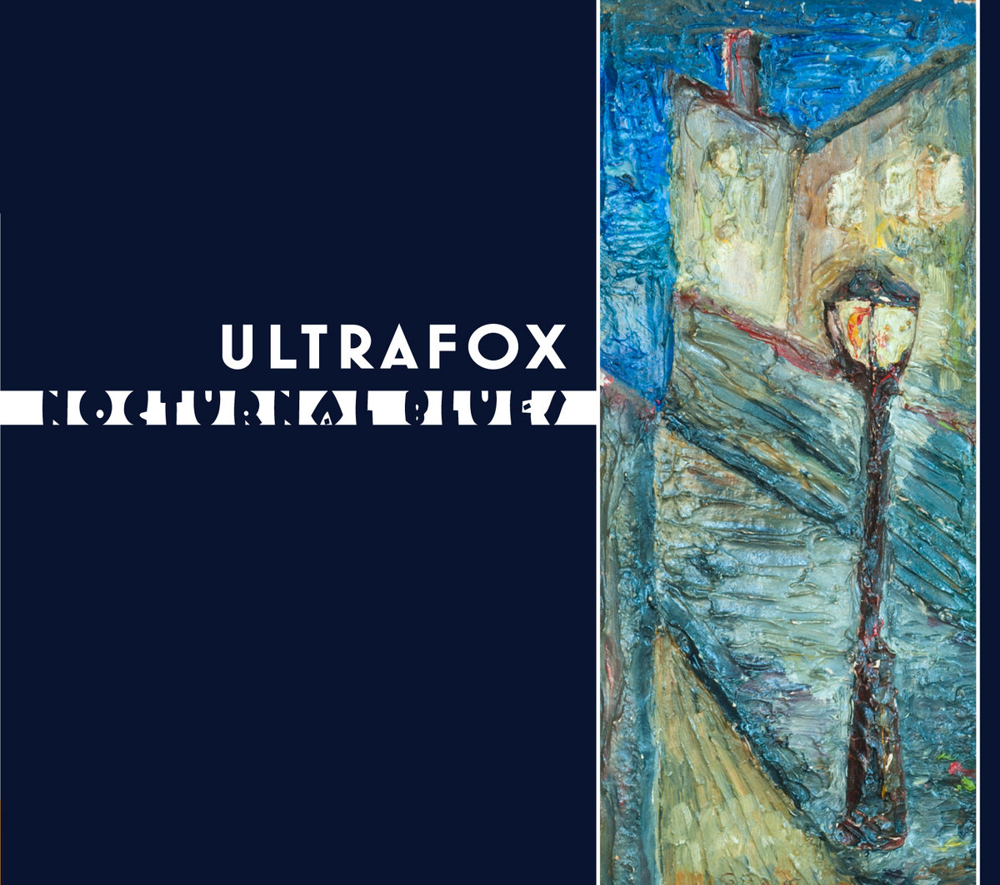
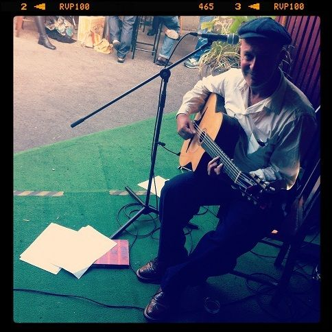
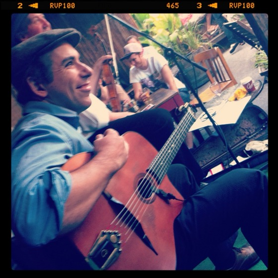
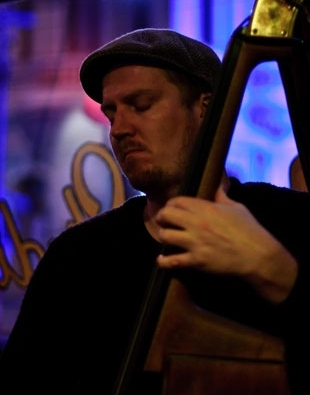

About Us
Drawing their inspiration from the unusual and infectious style of Django Reinhardt and The Hot Club of France, Ultrafox plays in a trio setting (two guitars and double bass with vocals) and adds violin, clarinet or female vocals to augment their sound as the occasion requires. The group has recorded three albums to date and built a steadily growing following and reputation as one of the best.
Formed in 2008 by Melbourne guitarist Peter Baylor, the band has enjoyed an ever increasing audience and are in demand with appearances at major Australian festivals including Wangaratta Jazz Festival, Stonnington Jazz Festival, White Night Melbourne, Oz Manouche, The Melbourne International Jazz Festival, and The Melbourne Recital Centre. Ultrafox play regularly at Paris Cat Jazz Club, The Lido Jazz Room, The Boite and other local music clubs as well as performing at corporate events & functions.
Listen

Albums on Bandcamp
Three albums of gypsy swing, jazz ballads and original compositions.

Nocturnal Blues
12 tracks recorded in glorious mono through vintage microphones on to analog tape — 2017
Upcoming Shows
Check back soon for upcoming gig dates, or follow us on Bandcamp for announcements.
-
TBANext show to be announced Melbourne, VIC
Photos
From the road, the stage, and the studio.
Members

Peter Baylor
Guitar & Vocals — Founder
A professional musician since 1980, Peter Baylor has played with countless bands in various styles in Melbourne and Sydney. With his eclectic guitar and vocal style he moves effortlessly from jazz and swing to blues, rockabilly and country styles. In recent years he’s toured Australia, the USA, Europe and Japan with a variety of groups including Doug Parkinson, Deke Dickerson, The Dancehall Racketeers, Dale Watson, Tom Baker, Flaco Jimenez, Ronnie Dawson, Mic Conway’s Whoopee band, Blue Drag, George Washingmachine and Julie O’Hara, The Baylor Brothers plus many more. In addition to his musical talents, Peter played the legendary guitarist Scotty Moore in the 1994 Sydney production of “ELVIS, The Musical”. He has supported Bob Dylan, Robert Plant, Hank Marvin, The Stray Cats, Tav Falco, Rosie Flores, Big Sandy and his Flyrite Boys, Mark O’Connor and Dan Crary over the years and more recently Mike Compton.

Jon Delaney
Guitar
Jon Delaney began his performance career in 1994, and has gone on to perform all over Australia in his own bands and as a sideman with countless other acts. He graduated from the Victorian College of the Arts in 2005, and alongside his performance schedule, teaches guitar at a tertiary level. He spent 2008 playing in and around Berlin, and has also performed in the United Kingdom and Canada. In 2011 he travelled to Belgium to study with manouche legend Fapy Lafertin.

Kain Borlase
Double Bass
Double bassist Kain Borlase has worked with a number of artists and groups including The Ken Schroder Quartet, Mark Lockett Trio, Peter and Andy Baylor, Julie O’Hara, Alan Lee, Ted Vining and The Brunswick Blues Shooters. He has participated in numerous east coast tours and festival, television and live to air radio performances including the ABC TV’s “Art Nation”, The Queenscliffe Music Festival, The Gympie Music Muster and The Melbourne International Jazz Festival.
Julie O’Hara
Vocals
Julie O’Hara has been active in jazz for over two decades, growing up in Melbourne, Australia, performing with Big Bands, gypsy swing, traditional jazz, R&B swing, bebop and vocalese. Julie has earned a reputation for her prodigious activity in Melbourne’s jazz and music clubs, national and international music and jazz festivals as a versatile and committed vocalist and songwriter. She has performed with, among others, the B# Big Band, The Pearly Shells Big Band, Society Syncopators, The Shuffle Club, Felix Reibel (The Cat Empire), George Washingmachine, Bob Sedergreen, Virus and Gil Askey.
Andy Baylor
Guitar
Andy Baylor has been playing professionally since the mid-seventies and has been a driving force behind many acts, including the Honeydrippers, Autodrifters, Hit and Run, and the Dancehall Raketeers. He has toured with Robert Plant, Bob Dylan and Slim Dusty, and played with many musical legends including David Grisman, Flaco Jiminez, Cajun great Dewey Balfa and fiddler Johnny Gimble. With the Cajun Combo he has backed Screaming Jay Hawkins, Louisiana Red, Jimmy Witherspoon—all legendary blues performers.
Michael McQuaid
Trumpet, Clarinet & Saxophone
Michael McQuaid is an expert on the jazz of the 1920s and 30s. Falling in love with the music while still young, he has been leading bands since the age of 15, and performs on trumpet, clarinet and saxophone. A highly sought-after musician, Michael has a polished stage presence and leads the band with flair. He is a mad collector of vintage instruments and recordings, but claims he can stop anytime he wants.
Contact
Available for festivals, corporate events, private functions and jazz clubs. For bookings and enquiries, get in touch.